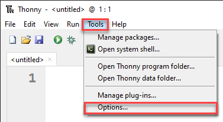
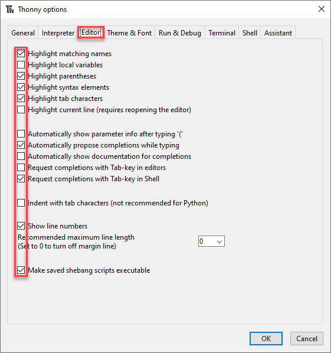
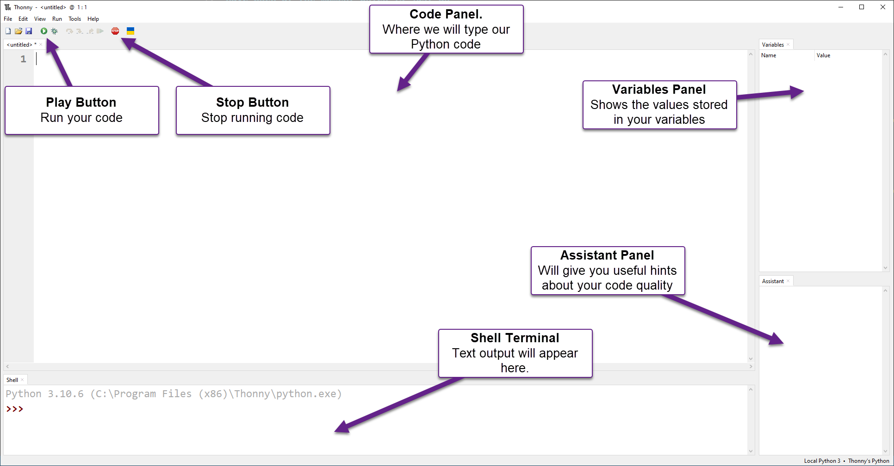

Python Turtle - Lesson 1#
In this lesson you will learn:
how to setup your programming environment
how to run your first program
how to use comments in Python
about dealing with error messages
how to import modules
how to create a simple turtle program
Part 1: Thonny Introduction#
What is Thonny#
Welcome to our first lesson on Python Turtle. This lesson will introduce Thonny. It is the IDE (integrated development environment) we will use to write our code. We are going to look at some basic Python code and its syntax.
Thonny
We will be using Thonny as our IDE. Thonny is a Python IDE for beginners. It comes packaged with Python, which helps with the setup. You can download it from thonny.org.
To be clear, Python is the language we will use, and we will use Thonny to write it. Like using Microsoft Word to write English, we will be using Thonny to write Python.
Python consists of text files called scripts. You can use any text editor to write Python. Integrated development environments, like Thonny, offer extra features (highlighting syntax and debugging help). We will look at those features later. Meanwhile, think of Thonny as a text editor with extra features built in.
Setting up Thonny#
Before we look at Thonny’s User Interface (UI), we need to turn on a few features, so our IDEs looks the same.
First, go to the View menu and make sure there is a tick beside Assistant, Shell and Variable.

Next go to Tools → Options

On the Editor tab make sure that your check-boxes are the same as the image below.

Finally on the Theme and Font tab make sure that the Syntax theme is set to IDLE Classic. Syntactic highlighting changes text colour depending on their role in the code. This helps us to structure our code the right way.

Now click OK and your Thonny should look the same as the one in the videos.
The User Interface#
The image below shows the Thonny UI parts that you need to know at the start. We’ll learn more later.

First Program#
For our first program we are going to make a simple program called hello world. This is the traditional first program to write.
Type the following code into the Code panel:
1# Our First Program
2
3print("Hello World")
PRIMM#
Throughout this course we will use the PRIMM process to reinforce our learning. PRIMM stands for Predict, Run, Investigate, Modify, and Make. It reflects effective programming practices and encourages curiosity in programming.
Let’s run through the PRIMM process now
Predict#
Before you run the code you need to predict what you think will happen. Go ahead and have a guess at what you think will happen.
Run#
Now go ahead and run the code by clicking on the Play button (or you can press F5 on your keyboard).
Your Shell should now show Hello World.
Is this what you predicted would happen?
Investigate#
Let’s investigate what happened.
The first thing to notice is that only Hello World appears in the terminal. The program completely misses the first line: # Our First Program. Why is that?
Starting a line with the
#character tells Python that the line is a comment.Computers will ignore comments because they are meant to be read by humans.
Comments are a way to make notes throughout your code.
Next notice line 3. The word print is in purple.
This tells the programmer that
printis a keyword in Python.A key word is like a command.
Try removing the
nfromprintso the line now readsprit("Hello World").Try running the code now and see what happens.
You should get the following error message in your Shell:
1Traceback (most recent call last):
2 File "<string>", line 3, in <module>
3NameError: name 'prnt' is not defined
Let’s unpack that error message:
Line 1:Traceback (most recent call last):is Python saying “this is where I got up to”.Line 2:File "<string>", line 3, in <module>tells you the file and the line of the error. In our case it isline 3.Line 3:NameError: name 'prnt' is not definedexplains the type of error.In this case it is a
NameErrorwhich means it has found a word that it doesn’t understand.It then tells us which word it doesn’t understand
prnt.
Go back to line 3 and fix it up so it reads print("Hello World") again. Notice that print turns back to purple.
Let’s continue the investigation. Remove the two " so line 3 now reads print(Hello World). Now run the program again.
Your Shell contains a different error:
1Traceback (most recent call last):
2 File "<string>", line 3
3 print(Hello World)
4 ^^^^^^^^^^^
5SyntaxError: invalid syntax. Perhaps you forgot a comma?
Let’s unpack that error message:
Line 3: shows you the specific line with the errorprint(Hello World)Line 4: a row of^symbols points to where the error is.Line 5:SyntaxError: invalid syntax. Perhaps you forgot a comma?:Identifies the error as a
SyntaxError: invalid syntax.which means your code does not follow Python’s rulesSuggests what you might have done wrong
Perhaps you forgot a comma?(the suggestion is wrong in this case, but luckily we know what we did wrong)
Change line 3 back so that is reads print("Hello World") again.
Notice how "Hello World" turns green? This syntax highlighting lets you know that Hello World is a type of value called a string. For the time being, think of a string as a whole bunch of characters. We will learn more about strings later on.
Continuing with the Investigation of line 3, lets remove the ( and ) characters. So it now reads print Hello World. Running this will present the following error in your Shell
1Traceback (most recent call last):
2 File "<string>", line 3
3 print "Hello World"
4 ^^^^^^^^^^^^^^^^^^^
5SyntaxError: Missing parentheses in call to 'print'. Did you mean print(...)?
Let’s unpack that error message:
It is a different
SyntaxErrorcalledMissing parentheses in call to 'print'.Parentheses are the curved brackets we removed.
This time Python’s hint was correct
Did you mean print(...)?.
Next, replace the opening parenthesis ( so line 3 now reads print("Hello World".
Run it and your will notice the error message change changed to a different syntax error.
1Traceback (most recent call last):
2 File "<string>", line 3
3 print ("Hello World"
4 ^
5SyntaxError: '(' was never closed
Let’s unpack that error message:
The error is letting you know that you failed to close your parenthesis.
In Python every opening parenthesis
(needs a matching closing parenthesis).
Before you fix
line 3, look at Thonny.Notice the grey highlight from the
(onwards?This syntax highlighting lets you know that an opening parenthesis was not closed.
This helps you can catch the error before running your code.
Ok you can fix line 3 up now so it reads print("Hello World").
Ok our investigation is over, and you have met some error messages. In your time coding, you will meet many, many more of these error messages. Don’t let them discourage you. Even the most experienced programmers get error messages. In fact, there is a saying amongst programmers: error messages are your friend. They help you work out what went wrong.
Modify#
Now time to modify the code.
There’s not much code there, but spend some time making the code print different things to the Shell.
Part 2: Introducing turtle#
First turtle program#
Let get started on our first Turtle program. Click the New icon and then type the following into the new file and then save it using the name lesson_1_pt_1.py.
1# Our first turtle program
Python comes with a limited set of commands (called functions) by default. It also has access to whole libraries of extra commands (called modules). One of those other modules is Turtle. To tell Python to use these other modules, we use the import command.
We will now tell Python to import turtle. Always put your import commands right at the top of your Python program.
Your code should look like this.
1# Our first turtle program
2
3import turtle
Create a turtle#
What is a turtle? A turtle is a little arrow that you can command to move around the screen. Before we can program the turtle, we have to make one.
On line 5 type my_ttl = turtle.Turtle(). Let’s explore that code:
turtle.Turtle()tells Python:from the turtle module you imported (
turtle)use the command
Turtle()to create a turtle.
my_ttl =names your created turtlemy_ttl.
You can name the turtle anything you want. In fact, the name my_ttl is pretty lame. Go ahead and name it something else. It can be whatever you want, but it can only be a one word name. Remember, wherever you see my_ttl you need to substitute your name.
Your code should now look like this.
1# Our first turtle program
2
3import turtle
4
5my_ttl = turtle.Turtle()
Make your turtle move#
Next, we’re going to make the turtle move.
On line 7 type my_ttl.forward(100).
Your code should now look like this:
1# Our first turtle program
2
3import turtle
4
5my_ttl = turtle.Turtle()
6
7my_ttl.forward(100)
PRIMM
Predict: We’re about ready to run our first turtle program. Before we do you need to predict what you think will happen.
Run: Now run the program and see if it follows your prediction. You probably predicted the movement to the right, but did you predict that it would leave a trail behind it?
Investigate: Like we did with
Hello Worldinvestigate the code. Changing things and see what happens.Modify: Finally, modify the code so it draws lines of different lengths.
Changing the turtle environment#
Let’s change the Turtle environment so it is consistent between all our computers.
The first thing we will do is make the Turtle window the same size.
Change your code to make it look the same as below, specifically lines 5 and 6:
1# Our first turtle program
2
3import turtle
4
5window = turtle.Screen()
6window.setup(500, 500)
7
8my_ttl = turtle.Turtle()
9
10my_ttl.forward(100)
Let’s talk about these changes.
In the turtle module the window is called a Screen. Line 5 of our new code makes a screen, much in the same way that we make a turtle:
turtle.Screen()tells Python from the turtle module (turtle.) use the commandScreen()to create a screen.window =give the created screen the namewindow.
In line 6 we use window.setup(500,500) to set the size of window as 500 pixels wide, by 500 pixels high.
What are pixels?
Your screen is made up of thousands of little dots. If you look really close at your screen you might see them. These are called pixels.
You also might read that a screen is 1920 x 1080. This is talking about pixels, it means the screen is 1,920 pixels wide and 1,080 pixels high.
We’ll learn more about pixels latter in the course.
Consider pixels as our measurement of movement on the screen. When we type forward(100) we mean move forward 100 pixels.
The second change we’re going to make is about looks. From the code below, add line 9 to your code.
1# Our first turtle program
2
3import turtle
4
5window = turtle.Screen()
6window.setup(500, 500)
7
8my_ttl = turtle.Turtle()
9my_ttl.shape("turtle")
10
11my_ttl.forward(100)
Do you want to predict what this change will do? Try running the code to see if you’re correct.
Change direction#
So now that we have fixed our window size and dealt with our turtle’s identity crisis, time to do some more drawing.
At the bottom of your code, add two more lines:
my_ttl.left(90)my_ttl.forward(100)
Your code should now look like this.
1# Our first turtle program
2
3import turtle
4
5window = turtle.Screen()
6window.setup(500, 500)
7
8my_ttl = turtle.Turtle()
9my_ttl.shape("turtle")
10
11my_ttl.forward(100)
12my_ttl.left(90)
13my_ttl.forward(100)
Predict: What do you think this code will do.
Try to be specific in your description.
Take a piece of paper and draw what you think will happen.
Run: Now run the program and see if it follows your prediction. Did the turtle drawing look the same as your drawing?
Investigate: Try changing the values within the brackets and see the results.
Exercises#
In this course, the exercises are the make component of the PRIMM model. So work through the following exercises to make your own code.
Exercise 1#
Download lesson_1_ex_1.py file and save it to your lesson folder. Below is its code.
1## Draw a square with the Turtle ##
2
3import turtle
4
5window = turtle.Screen()
6window.setup(500, 500)
7
8my_ttl = turtle.Turtle()
9
10## Write your code below this line ##
After line 10, as the comments says, write code that will create a square.
Exercise 2#
Download lesson_1_ex_2.py file and save it to your lesson folder. Below is its code.
1## Draw a Triangle with the Turtle ##
2
3import turtle
4
5window = turtle.Screen()
6window.setup(500, 500)
7
8my_ttl = turtle.Turtle()
9
10## Write your code below this line ##
After line 10, as the comments says, write code that will create a triangle.
Exercise 3#
Download lesson_1_ex_3.py file and save it to your lesson folder. Below is its code.
1## Draw a hexagon with the Turtle ##
2
3import turtle
4
5window = turtle.Screen()
6window.setup(500, 500)
7
8my_ttl = turtle.Turtle()
9
10## Write your code below this line ##
After line 10, as the comments says, write code that will create a hexagon.